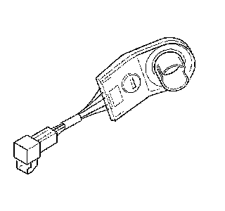

Alarm Module: Service and Repair
Theft Deterrent Module Replacement
Removal Procedure

Caution: Refer to SIR Caution (SIR Caution) .
1. Disable the SIR. Refer to SIR Disabling and Enabling (Service and Repair) .
2. Remove the upper and lower trim covers. Refer to Steering Column Trim Covers Replacement (Steering Column Trim Covers Replacement) .
3. Remove the lock cylinder. Refer to Ignition Lock Cylinder Replacement (Ignition Lock Cylinder Replacement) .
4. Disconnect the connector from the theft deterrent control module.
5. If necessary, disconnect the connector from the ignition lock cylinder case.
6. Remove the theft deterrent control module from ignition lock cylinder case assembly.
Installation Procedure
1. Install the theft deterrent control module onto the ignition lock cylinder case assembly.
Caution: Refer to SIR Inflator Module Coil Caution .
2. Connect the connector to the theft deterrent control module.
3. If necessary, connect the connector to the ignition lock cylinder case.
4. Install the lock cylinder. Refer to Ignition Lock Cylinder Replacement (Ignition Lock Cylinder Replacement) .
5. Install the upper and lower trim covers. Refer to Steering Column Trim Covers Replacement (Steering Column Trim Covers Replacement) .
6. Enable the SIR. Refer to SIR Disabling and Enabling (Service and Repair) .
7. Program the theft deterrent system. Refer to Control Module References (Programming and Relearning) .